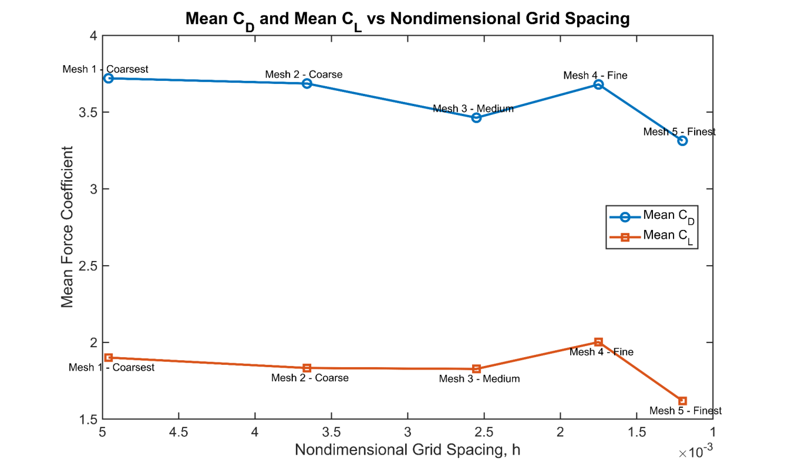
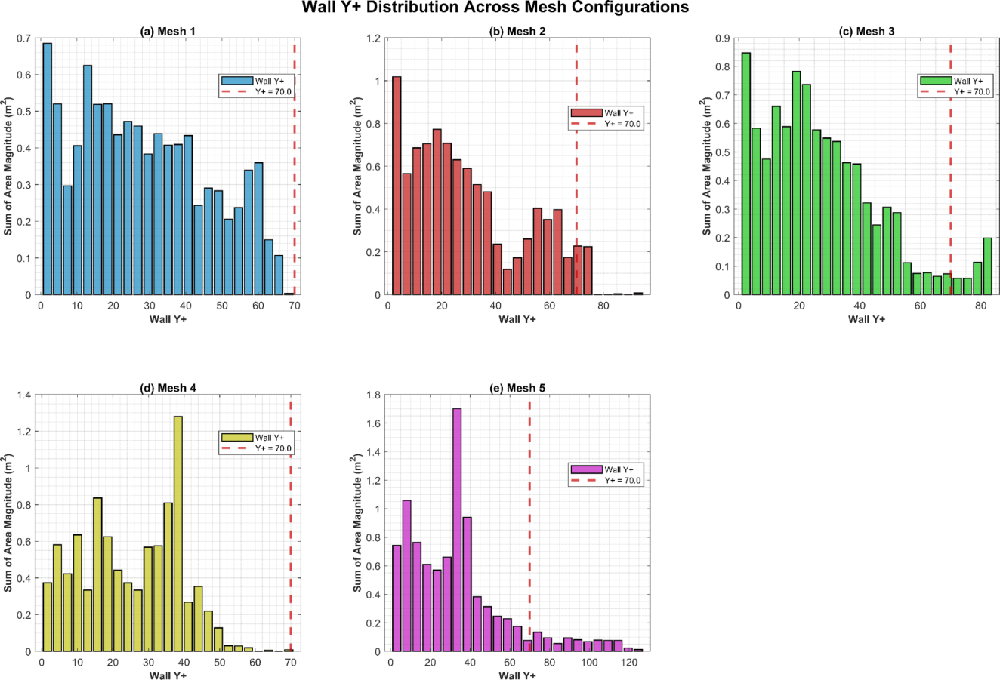

Validation & Mesh Sensitivity
The stationary baseline and the grid convergence study, the five tilting case meshes, and which results have converged.
The No-Tilt Baseline
Before introducing rotation I ran a stationary case, to verify the unsteady formulation, the timestep treatment and mesh sensitivity without the additional complexity of overset motion. I carried out a grid convergence study on a triplet of meshes at a refinement ratio of 1.5, following Celik et al. and other literature.
- Apparent order p = 2.422: This is close to the 2nd-order convective and temporal discretisation I used.
- Fine-to-medium error band (GCI) of 1.894%: The coarse-to-medium band is much larger at 18.5%, as expected from the spread in mesh quality.
- St = 0.260–0.298: Across the triplet, a reasonable Strouhal number range for a high-Re bluff body with features of rectangular and elliptical cylinders.
- I could not confidently establish the asymptotic range, because the quality difference between meshes in the triplet was too large. The study supports the methodology, but it does not demonstrate full mesh independence.

The Tilting Meshes
The tilting case adds rigid-body rotation, overset interpolation, wall modelling and a larger timestep than the baseline, so it needed its own numerical evidence. I ran five meshes, from 40,624 to 695,805 cells, at increasingly long runtimes (from 13 hours for the first run to 90 hours for the final one).
- Drag is comparatively clustered and lift is not: The non-finest meshes differ from the finest by roughly 12.9% to 23.7% in CL, and lift is most sensitive late in the sweep when the wake is least settled. Mean CD spans 3.313 to 3.720 across the family, while mean CL spans 1.619 to 2.002.
- Convergence is non-monotonic: Both mean coefficients rise from Mesh 3 to Mesh 4, then fall again at Mesh 5. Refinement initially strengthens the separated wake, and further refinement does not automatically produce a cleaner global solution.

Which Run Is Most Credible
On the evidence available I take Mesh 4 rather than Mesh 5 as the most credible run, judged on force-coefficient stability, CFL history and wall y+ consistency rather than on cell count.
- CFL: Mesh 4 stays the smoothest and lowest through most of the sweep at 0.25–0.35. Mesh 3 peaks at 0.88, Mesh 1 spikes above 1.0, and Mesh 5 climbs to about 0.82 late in the rotation.
- Wall y+: Meshes 1–3 put much of the nacelle surface in the buffer layer (y+ ≈ 5–30), which is the region wall functions handle worst. Meshes 4 and 5 sit mostly in the low inertial sublayer at y+ ≈ 30–40.
- I did not maintain the y+ ≈ 70 target anywhere, a consequence of the transient case departing from the flat-plate assumption used to build the first-layer estimate.

Convergence Summary
The no-tilt grid convergence study supports the transient methodology on the fixed-body problem. It is not a convergence proof for the tilting case. The finest mesh does not give the single correct answer to the tilting case, but the mesh family does converge towards consistent aerodynamic behaviour.
- Robust across the meshes: The strong drag growth through tilting, the broadening wake, the increasing sensitivity of lift later in the sweep, and the persistence of low-frequency shedding.
- Mesh sensitivity: Lift values late into the conversion and the spectral peaks.